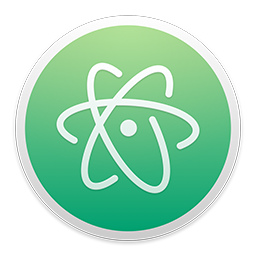
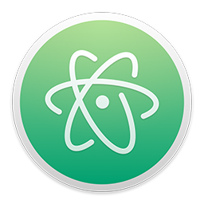

New Moon

One theme for all your apps
New Moon is available for your text editor (VS Code, Brackets, Sublime, or Atom), your browser's DevTools (Chrome), and your terminal (iTerm2).


 

Intuitive syntax highlighting
I've meticulously designed New Moon to be easy on the eyes with intuitive connections between related elements. It's pleasant for long coding hours in any language, and particularly well suited for HTML, CSS, Sass, PHP, and JavaScript.
HTML & CSS work together
In HTML, we can see tags are blue, attributes are yellow, and values are green.

In CSS, Sass, or LESS, styling tag selectors will be blue, and classes will be yellow.

Optimized for JSX and React
Even React component names are blue, matching HTML and JSX tags.

Clear distinctions between code and markup
Variables are red, tags are blue, and the distinction between PHP and HTML or JavaScript and JSX is clear and obvious.

What are people saying?
“Undoubtedly the best color theme ever. Just install and see yourself. The background color is perfect for long time exposure to the eyes. And the code color is well lit and separated from each other.”
— Ibnul Alam
“Absolutely beautiful theme. Definitely deserves more recognition.”
— Arcadia
“Great theme for long coding hours.”
— Volkan
“Really surprised this theme isn't more popular. It's a joy to use for HTML/CSS/JS and PHP. I like that it isn't heavy on blue colors like a lot of the popular dark themes.”
— Brendan
Made by Tania Rascia